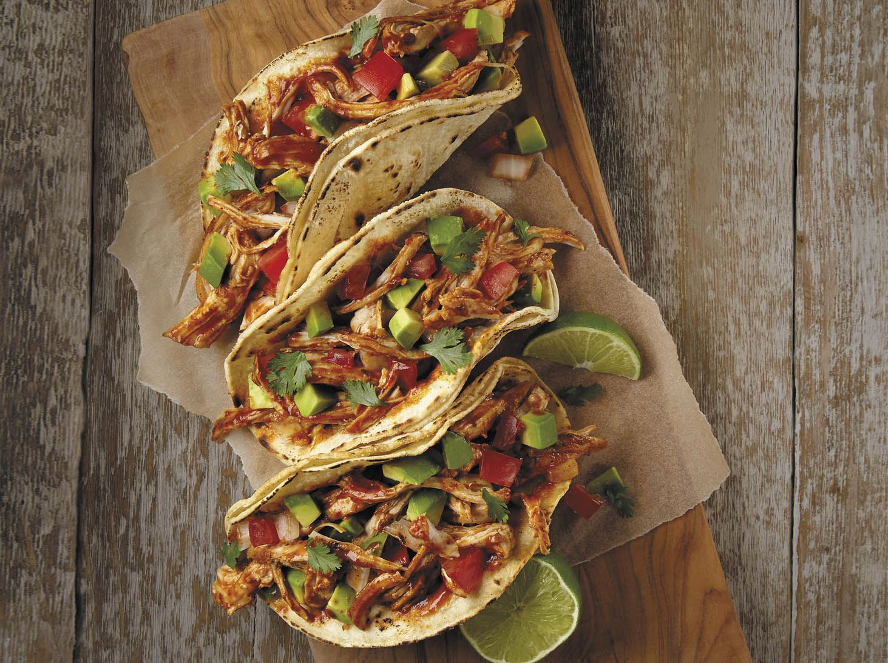

Ingredientes
- 2 pechugas de pollo
- 12 tortillas de maíz
- 1 cebolla morada
- 1 aguacate
- Jugo de 2 limones
- Un puñado de cilantro fresco
- 1 tomate
- Salsa al gusto
- Sal y pimienta
Instrucciones
- Cocina las pechugas de pollo a la parrilla o en una sartén con un poco de aceite, sal y pimienta.
- Una vez cocido el pollo, córtalo en tiras pequeñas.
- Pica la cebolla morada, el cilantro y el tomate.
- Coloca las tortillas en una sartén para calentarlas ligeramente.
- En cada tortilla, agrega un poco de pollo, cebolla, tomate, aguacate y cilantro.
- Exprime el jugo de limón sobre los ingredientes y añade salsa al gusto.
- Sirve caliente y disfruta de tus tacos de pollo.